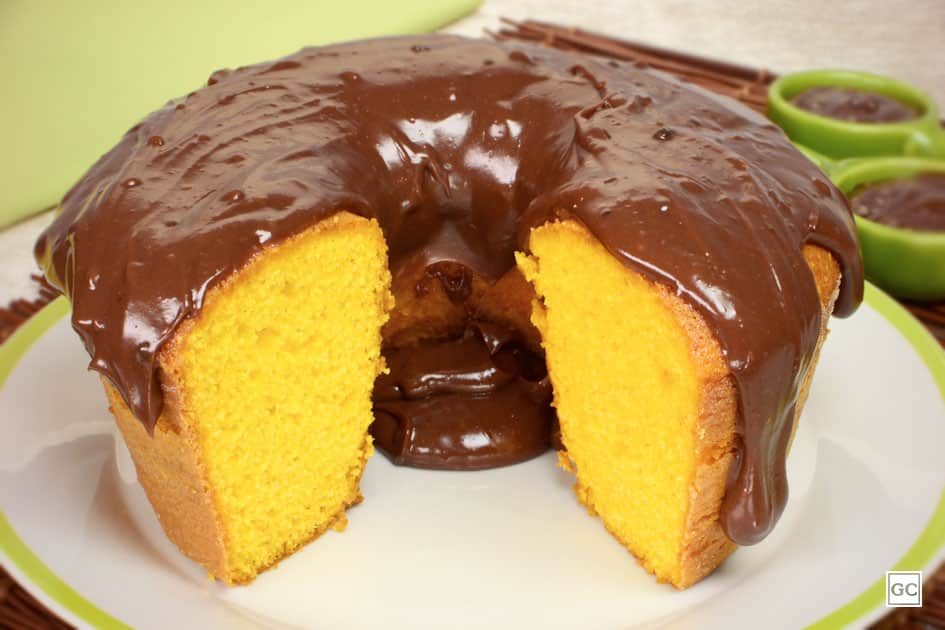
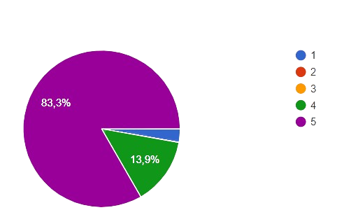
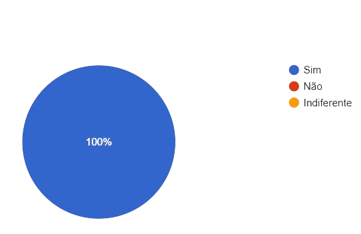

Essa receita foi desenvolvida buscando trazer sabor, inclusão, praticidade e nutrientes para o seu dia a dia. Esse bolo vai te provar que somente com ingredientes de origem vegetal pode-se obter sabores incriveis, teste e surpeenda-se!
Quem pode comer esse bolo? Além das pessoas que não possuem restrições alimentares essa receita possibilita que pessoas com restrições adversas como Veganos, intolerantes a lactose, alérgicos a proteína do leite e/ou ovos e pessoas que não conssomem produtos de origem animal por quaisquer motivos, possam também experimentar e consumir diariamente.

INGREDIENTES:
. 1 xícara de água
. 1 xícara de suco de laranja
. 1 xícara de cenoura
. 1/4 de xícara de óleo
. 3 xícaras de farinha de trigo
. 1 xícara de açúcar
.1 colher de sopa de fermento
MODO DE PREPARO:
1. Unte uma forma com oleo e reserve.
2. No liquidificador adicione a água, o suco de laranja, a cenoura e o oleo e bata muito bem até que a mistura esteja completamente homogenea, reserve.
3. Em uma bacia junte a farinha (peneirada) e o açúcar e a mistura anteriormente reservada, misture até que fique homogeneo.
4. Adicione o fermento e misture devagar até que ele se integre totalmente na massa.
5. Asse em forno pré aquecida a 200° por cerca de 45 minutos.
6.Tudo pronto! Aproveite a sua receita e marque o @veg_if.cpin para dar seu feedback.
Foi realizada uma pesquisa anônima de aceitabilidade dessa receita no IFRJ-Campus Pinheiral, a pesquisa constou com a participação de 36 alunos entre todos os cursos tecnicos onde 3 desses possuiam algum tipo de restrição alimentar.
Os alunos participantes da pesquisa experimentaram o bolo e em seguida responderam um formulário com perguntas referentes a sabor e preferências, os dados extraídos você encontra abaixo:
Gráfico 1: Nota ao bolo de cenoura

O gráfico 1 refere-se a pergunta "Dê uma nota ao bolo de cenoura" e pode-se observar um retorno muito positivo por parte dos alunos onde 83,3% (maioria) das respostas corresondem á avalição 5 (nota máxima permitida).
Gráfico 2: aceitabilidade da receita

O gráfico 2 refere-se a pergunta "Você gostaria que esse bolo fosse servido no café da manhã da escola?" e impressionantemente todos os alunos envolvidos na pesquisa aprovam essa receita de bolo como uma opção oferecida para os mesmos, mesmo não contendo ingredientes de origem animal.
A pesquisa ainda constou com uma caixa de comentários opcionais e todas as respostas obitdas foram positivas, vale ressaltar algumas das mais interessantes como por exemplo:
"Não parece ser vegano. Não que seja um problema parecer vegano, apenas pontuando que às vezes as pessoas ficam receosas por conta do preconceito ou ignorância sobre o veganismo e acredito que tenha uma ótima aceitação, já que tem um sabor rico e parecido com o que as pessoas não veganas estão acostumadas. A textura é agradável e é saboroso."
Ou ainda:
"Experimentei um bolo de cenoura vegano e fiquei realmente impressionado. A primeira mordida já revelou uma textura macia e úmida na medida certa, que surpreende e conquista. O sabor da cenoura apareceu de forma equilibrada, sem exageros, trazendo leveza e frescor ao doce. Diferente das versões tradicionais, essa releitura vegana mostrou que é possível manter a essência do bolo de cenoura, mas com um toque de novidade que torna a experiência ainda mais especial.A cobertura complementou perfeitamente o bolo, criando aquele contraste delicioso que deixa cada pedaço irresistível. O que mais me chamou atenção foi como a ausência de ovos e leite não comprometeu em nada o resultado pelo contrário, trouxe uma sensação de leveza e originalidade que transformou a receita em algo único. Não parecia apenas uma adaptação, mas sim uma versão cheia de personalidade, capaz de conquistar mesmo quem não segue uma alimentação vegana. Foi um doce que uniu sabor, textura e consciência, mostrando como a confeitaria vegana pode ser surpreendente e deliciosa."
Além de vários outros comentários positivos como "Muito bom", "Ótimo bolo, me surpreendeu" e "Uma delicia".